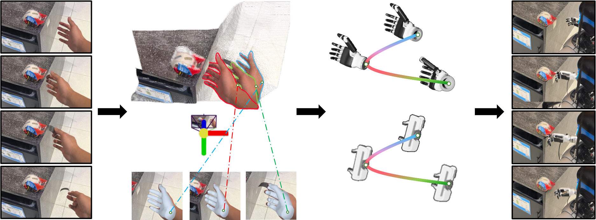
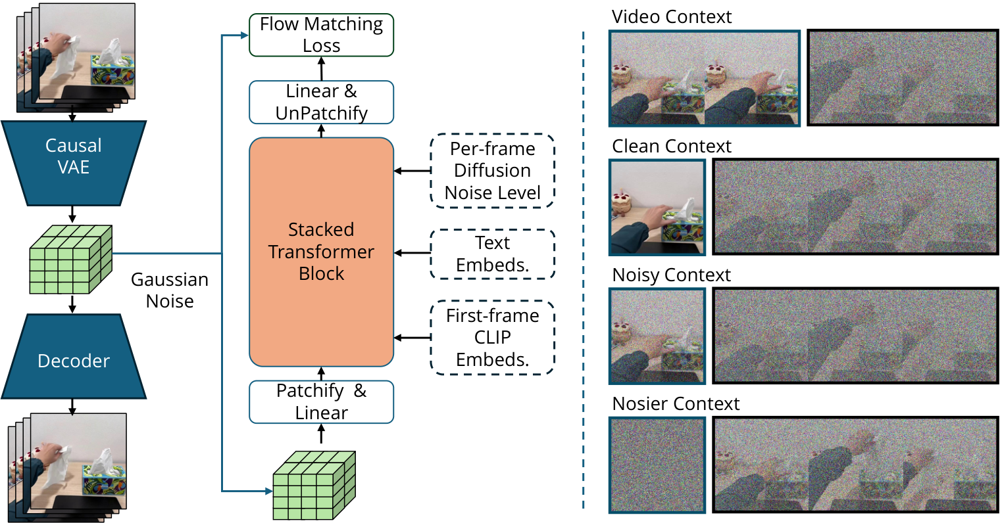
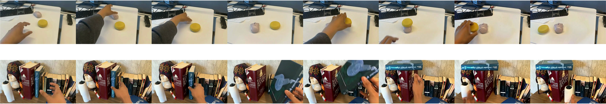
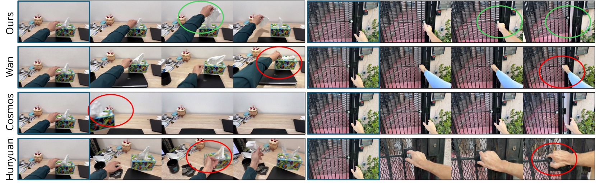
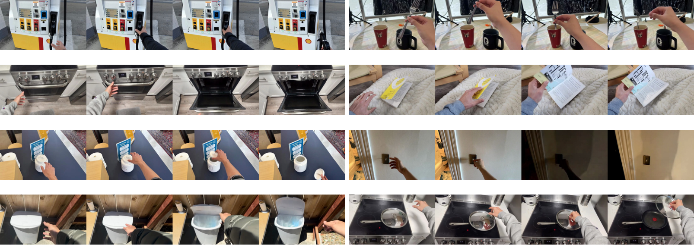
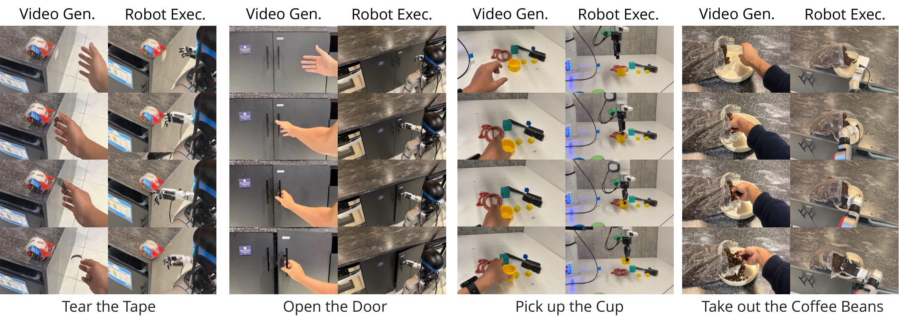
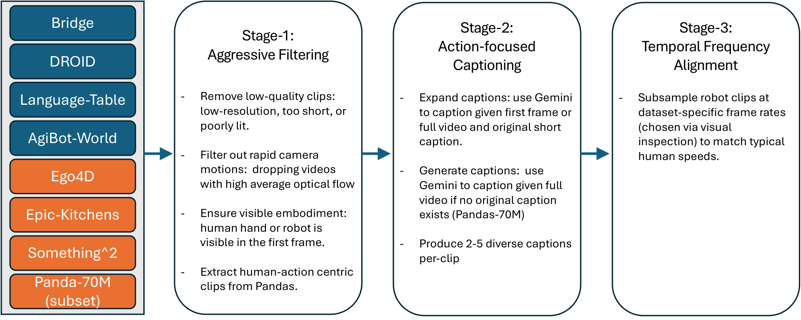

Large Video Planner Enables Generalizable Robot Control
1. Quick overview of the paper
| Reading positioning | content |
|---|---|
| What should the paper solve? | Existing VLA mainly migrates from static image and text pre-training to action output, but robot action data is scarce, resulting in weak task-level generalization. The paper wants to explore another route: using video as the main mode of the robot foundation model, and using spatiotemporal action trajectories in Internet-scale videos to learn general planning. |
| The author's approach | Train the 14B LVP video model, input one or several scene images and task text, and output a video plan of about 3 seconds; then use HaMeR, MegaSAM, Dex-Retargeting, GraspNet, cuRobo and other modules to convert the hand/gripper movement in the generated video into robot wrist trajectory, finger joint or gripper action. |
| most important results | On 100 third-party in-the-wild manipulation prompts, LVP's average success rate for Level 3 Task Complete is 59.3%, Best@4 is 82.0%, and Level 4 Perfect is 44.0%, which is significantly higher than Wan 2.1, Cosmos-Predict 2, and Hunyuan. On the real robot, LVP surpasses $\pi_0$ and OpenVLA in multiple tasks of Franka+gripper, and completes tasks on G1+Inspire dexterous hand such as opening doors, cleaning tables, sweeping balls, and tearing tapes for which the VLA baseline is not applicable. |
| Things to note when reading | This is not an end-to-end closed-loop strategy, but a pipeline of "video generation plan + open source reconstruction/redirection + open-loop execution". The strengths of the paper are task-level zero-shot generalization and video planning capabilities, while the weaknesses are real-time performance, reconstruction error, retargeting failure and lack of closed-loop feedback. |
Core contribution list
- LVP model: A 14B video foundation model for embodied planning, continuing training based on Wan I2V 14B weights.
- LVP-1M data set: 1.4M action-centric clips, from 4 robot data sources and 4 human activity data sources, with diverse action captions.
- Video to action pipeline: Convert the generated human hand video into real robot movements through 4D hand trajectory, finger retargeting, and gripper grasp extraction.
- Task-level generalization assessment: Use 100 field tasks freely proposed by third parties and verify with real robots that the video plan can be executed.

2. Background and problem setting
2.1 Task-level generalization is more difficult than object-level generalization
The paper distinguishes three types of generalization: object-level generalization, configuration-level generalization, and task-level generalization. The evaluation of many robot foundation models is still close to the training distribution. For example, verbs such as "pick" or "fold" appear in large numbers in training, but only the object or position changes. The author is concerned about stronger zero-shot task-level generalization: whether the model can complete completely different task verbs in unseen scenes, such as flush the toilet, tear the tape, grab gas nozzle.
2.2 Why choose video as the main mode?
Text and static images provide semantic and visual recognition, but do not directly include how the action unfolds. Videos naturally record state changes over time, including object contact, movement, deformation and human action programs. Therefore, the author regards video as a data modality closer to robot planning: the video generation model can "imagine" the task completion process in pixel space, which is then executed by the action extraction module.
2.3 Core differences with VLA
VLA is initialized through the static image and text knowledge of MLLM, and then learns the mapping from vision+language to action on a small amount of robot data. LVP first learns the mapping from image/text to future video on a large number of human and robot action videos, and then uses the generated video as an action plan. Its migration is not "image and text semantics to actions", but "video dynamics to robot actions".
3. Related work context
| Technical line | Positioning in the paper | The difference between LVP |
|---|---|---|
| Video Diffusion | Video generation models such as Wan, Sora, and Hunyuan are good at content generation, but they may not necessarily adhere to the robot's initial observation and physical action constraints. | LVP continues to train for embodied planning, and introduces Diffusion Forcing and History Guidance to improve image conditions and timing consistency. |
| Robot Foundation Models / VLA | RT-2, OpenVLA, $\pi_0$, etc. extend from visual language models to action output. | LVP does not directly predict action tokens, but generates interpretable video plans, which are then post-processed into actions. |
| Learning from Video Demonstration | Existing work uses video generation to guide control and world models for prediction or evaluation. | LVP pursues open video planning models at foundation-model scale and large-scale action-centric datasets, with redirected execution on real robots. |
4. Method details
4.1 Overall pipeline
The overall design is a two-stage design: the first stage LVP generates a visual action plan in the video space; the second stage action extraction converts the video plan into specific robot actions. The paper uses "opening the door" as an example: the robot sees the door handle and receives the "Open this door" command. LVP generates a video of the hand reaching for the handle, rotating, and pushing the door; then the action extraction module converts this visual plan into a trajectory that can be executed by a five-fingered dexterous hand or a parallel gripper.

4.2 Latent Video Diffusion
LVP uses temporally causal 3D VAE to compress pixel videos into 3D latent. VAE encodes the spatio-temporal patch of $8\times8\times4$ into 16-channel embedding, and compresses the input $[1+T, 3, H, W]$ to $[1+\lceil T/4\rceil, 16, \lceil H/4\rceil, \lceil W/4\rceil]$. The first frame is repeated 4 times, allowing the model to handle single-frame image conditions simultaneously.
The training goal is flow matching: interpolate between clean latent and Gaussian noise, and let the model predict the flow required to go from noisy latent back to clean latent.
$$ z_k=(1-k)z_0+k\epsilon, \qquad \epsilon\sim\mathcal{N}(0, 1) $$ $$ \mathcal{L}= \| f_\theta(z_k, c, k)-k(\epsilon-z_0)\|_2 $$where $c$ contains the input image and text instructions, and $k$ is the noise level. The model is initialized from Wan I2V 14B and trained on video DiT in compressed latent space.
4.3 Diffusion Forcing Transformer
Standard video diffusion applies uniform noise to all frames, while LVP uses Diffusion Forcing: applying different noise levels to historical and future segments. During training, the history length $\{0, 1, \ldots, 6\}$ latent frames are randomly selected and the video is divided into history and future; the history segment has a 50% probability of being set to zero noise. In this way, the same model can learn I2V and V2V uniformly.
This design has two advantages: first, there is no need to design additional cross-attention for variable-length context frames; second, historical frames can be flexibly set to clean context during sampling, thereby making single-frame image-to-video or multi-frame video-to-video extension.

4.4 History Guidance
LVP enhances compliance with initial image/history frames with History Guidance. If $x_k$ is a future segment, $x_{\mathrm{hist}}$ is a historical condition frame, and the text is $c_{\mathrm{text}}$, the model can estimate scores with and without historical conditions respectively:
The final sampling also overlays the text CFG so that the generated video follows both the text and the initial image. The author believes that this can significantly improve plan quality, especially physical feasibility and instruction following.
4.5 Autoregressive Extension
Since the model supports up to 24 frames, that is, 6 VAE latent frames as context, the end of the generated video can be repeatedly used as a historical condition to iteratively generate a multi-stage video plan. The paper gives three-stage examples, such as moving the mouse first, then stacking yellow objects, and then moving them to the table.

4.6 Video Plan to Robot Action
For human hand videos, the LVP action extraction process is as follows:
- HaMeR: Frame-by-frame estimation of MANO hand vertices $\mathbf{V}_t$ and wrist orientation $\mathbf{R}_t$.
- MegaSAM: Estimate depth, camera intrinsic and extrinsic parameters, and use 4D reconstruction to resolve monocular scale ambiguity and temporal drift.
- 4D alignment: Use wrist pixel and depth backprojection to obtain wrist trajectory, retain HaMeR orientation, and use Savitzky-Golay and SLERP for smoothing.
- Dex-Retargeting: Mapping human hand keypoints to dexterous hand joint configuration $\mathbf{q}^R_t$.
- Robot execution: Transform the wrist pose from camera coordinates to robot coordinates, cuRobo solves arm IK, and finger joints directly drive the hand controller.
For the parallel gripper, the appendix explains that five to two fingers are an under-constrained problem, so GraspNet is used to predict candidate grasp poses, and the grasp intent heuristic in human hand movements is used to trigger grasping.
5. Experiments and results
5.1 Third-party task selection
The authors let third-party participants freely propose operational tasks from everyday environments: take photos containing hands and target objects, write down short tasks that can be completed in 3-5 seconds, and encourage scenarios and tasks to be diverse and difficult. There are approximately 200 tasks initially collected, including OOD scenes and tasks such as gas stations, flushing toilets, and tearing off tapes. Another batch of annotators filters samples that are low-quality, blurry, or too close to common tabletop pick-and-push, and finally retains 100 high-quality tasks and rewrites them into more detailed task descriptions using Gemini.
5.2 Video plan evaluation
The model inputs the observation image and the rewritten instruction to generate a video plan. Comparison objects include Wan 2.1 I2V 14B, Cosmos-Predict 2 14B, Hunyuan I2V 13B. Each method generates 4 videos per prompt, and is scored by third-party annotators on a four-level scale:
- Level 1 Correct contact: Whether the hand is touching the correct object and in the correct position.
- Level 2 Correct end state: Whether the goal was achieved in the last frame.
- Level 3 Task complete: Correct contact and correct final state, while the movement is continuous and feasible, allowing small physical imperfections.
- Level 4 Perfect: Mission accomplished with no obvious physical and visual artifacts.
| method | L1 Avg | L1 Best@4 | L2 Avg | L2 Best@4 | L3 Avg | L3 Best@4 | L4 Avg | L4 Best@4 |
|---|---|---|---|---|---|---|---|---|
| Wan 2.1 I2V 14B | 83.9 | 99.0 | 47.0 | 80.0 | 39.3 | 76.0 | 20.5 | 53.0 |
| Cosmos-Predict 2 14B | 45.3 | 81.0 | 11.9 | 35.0 | 7.5 | 24.0 | 2.5 | 9.0 |
| Hunyuan I2V 14B | 68.7 | 96.0 | 27.3 | 65.0 | 13.5 | 42.0 | 7.2 | 27.0 |
| LVP | 87.3 | 100.0 | 63.2 | 85.0 | 59.3 | 82.0 | 44.0 | 71.0 |
The most critical is Level 3/4. Wan is still very high at Level 1, indicating that it can contact the right object, but it drops significantly in the final state and complete actions; LVP reaches 59.3% at Level 3, indicating that it is more capable of generating continuous, feasible, and semantically correct action plans.


5.3 Real robot execution
The real experiment covers two platforms: Franka Emika Arm + parallel-jaw gripper, and Unitree G1 Arm + Inspire dexterous hand. VLA baseline $\pi_0$ and OpenVLA are only suitable for parallel gripper tasks and do not support multi-fingered dexterity hand setups.
| Task | LVP | $\pi_0$ | OpenVLA |
|---|---|---|---|
| Pick Objects | 5/10 | 3/10 | 0/10 |
| Pick A into B | 3/10 | 1/10 | 0/10 |
| Open Drawer | 2/10 | 1/10 | 0/10 |
| Press Button | 4/10 | 0/10 | 0/10 |
| Pick Objects (OOD Object) | 4/10 | 0/10 | 0/10 |
| Pick A into B (OOD Object) | 2/10 | 0/10 | 0/10 |
| Pick Objects (OOD Scene) | 6/10 | 1/10 | 0/10 |
| Pick A into B (OOD Scene) | 1/10 | 0/10 | 0/10 |
| G1 + Inspire dexterous hand mission | LVP success rate |
|---|---|
| Pick Objects | 4/10 |
| Press Elevator Button | 4/5 |
| Sweep Tennis Ball into Bucket | 5/5 |
| Open Box | 2/10 |
| Open Door | 6/10 |
| Wipe Table | 8/10 |
| Scoop Coffee Beans | 3/5 |
| Tear off Clear Tape | 2/5 |
The results show that LVP is generally better than $\pi_0$ and OpenVLA in the parallel gripper task, but the absolute value of the success rate is not high, indicating that the pipeline is still fragile. The dexterous hand results further reflect task-level generalization: tasks such as opening doors, cleaning tables, sweeping balls, and tearing tape are not within the common pick-and-place distribution, and the baseline cannot directly adapt to multi-fingered hands.


6. Key points of reproducibility and implementation
6.1 Dataset LVP-1M
| Source | Filtered clips | Robot? | perspective | form | in-the-wild | hands/arms |
|---|---|---|---|---|---|---|
| Bridge | 25k | Yes | Third-person | Gripper | No | No |
| DROID | 192k | Yes | Third-person | Gripper | No | Yes |
| Language-Tables | 71k | Yes | Third-person | Gripper | No | No |
| AgiBot-World | 863k | Yes | Third-person | Gripper | No | Yes |
| Ego4D | 39k | No | Egocentric | Human Hand | Yes | Yes |
| Epic-Kitchens | 7k | No | Egocentric | Human Hand | No | Yes |
| Something-Something | 93k | No | Third-person | Human Hand | Yes | Yes |
| Panda-70M filtered | 196k | No | Third-person | Human Hand | Yes | Yes |
The processing flow includes quality filtering, action center caption, and time-frequency alignment. Robot data often moves slowly and has different frame rates. The author does not simply unify the FPS, but aligns the clips to "the speed at which humans complete similar atomic actions", such as a 3-second action clip.

6.2 Training configuration
- Training sample: 49-frame video clip, resolution 832×480.
- VAE latent shape: 104×60×13.
- Continue pretraining: batch size 128, 60, 000 iterations, warmup 1000 steps, learning rate $1\times10^{-5}$.
- Low camera motion finetuning: batch size 128, 10, 000 iterations, learning rate $2.5\times10^{-6}$.
- Total training: 128 H100 SXM5 GPUs, ~14 days.
- First stage data reweighting: AgiBot-World 0.375, DROID 0.75, Ego4D 1.5, Pandas 0.5, Something-Something 0.5, Bridge 1.0, Epic-Kitchens 2.0, Language Table 0.05.
6.3 Panda-70M subset extraction
The appendix gives the extraction process of Panda-70M hand interaction subset: first use 108 whitelist keywords and 84 blacklist keywords for caption filtering, download about 692K videos; then cut into 4 seconds clips, and run human pose detection on 768×1024 resize frames at 1 FPS; finally use Gemini-2.0 Flash to evaluate whether there are rich hand movements, meaningful actions, normal speed, and no camera switching. Only True/True/True/False samples were retained, resulting in 196K clips.
6.4 Real robot setup
| task set | robot | control frequency |
|---|---|---|
| Task Set 1 | Franka Panda Arm + Parallel-Jaw Gripper | 15 Hz |
| Task Set 2 | Unitree G1 Arm + Inspire Hand (DH56DFX) | 5 Hz |
G1 and Inspire hand are mechanically connected through flange, and synchronized arm-hand control is performed based on the Unitree teleoperation framework. The joint angles output by dex-retargeting must also be remapped to the valid motor command range of Inspire Hand before they can be executed in real time.
7. Analysis, Limitations and Boundaries
7.1 The most valuable part of this paper
The most valuable part is that the route of "video model as a robot planner" has been pushed to foundation-model scale, and it is supported by open source data and real execution pipeline. Rather than only reporting strategy scores on simulated tasks, the paper allows third parties to freely propose tasks, use video models to generate plans, and then convert part of the plans into real robot actions. This allows readers to more clearly see the task-level generalization potential of video pre-training and how it differs from traditional VLA.
7.2 Why the results hold up
- The test tasks are not a small set of the author's choice: The 100 in-the-wild prompts were sourced from third-party participants and independently filtered to avoid designing the assessment solely on model capabilities.
- The four-level rating breaks down the type of failure: Level 1 to Level 4 distinguish contact, final state, complete action and physical perfection. It can be seen that the baseline can often contact the target, but it is difficult to complete a continuous feasible motion plan.
- The comparison model is strong and of the same scale: Video evaluation comparison Wan 2.1 I2V 14B, Cosmos-Predict 2 14B, Hunyuan I2V 13B, all are strong video generation models.
- There is real robot closed-loop verification: Although the execution is an open-loop pipeline, it does convert the generated video into Franka and G1 dexterous hand movements and compare it with $\pi_0$/OpenVLA on the parallel gripper task.
- The appendix discloses project details: Data filtering, Panda subset extraction, training hyperparameters, MegaSAM/HaMeR alignment, gripper retargeting, and robot control frequency are all explained.
7.3 Limitations clearly stated by the author
- Inadequate real-time performance: A single video schedule takes minutes to generate on a single A100 and cannot be deployed directly in real time.
- There will be an error when extracting the action link: Both 4D reconstruction and hand pose estimation rely on open source models, and any error in any step will lead to task failure.
- Retargeting has form bottlenecks: The five-fingered hand has acceptable dexterity, but it is severely under-constrained when it comes to the low-degree-of-freedom parallel gripper.
- Open loop execution: The overall robot execution framework is open-loop, which is not sufficient to handle long-range, dynamic or dexterous tasks that require feedback and error correction.
7.4 Applicable boundaries
LVP is more suitable for generating short-term manipulation plans that "humans can complete within a few seconds, are visually observable, and have clear action procedures." It is currently not suitable for tasks requiring real-time closed-loop control, strong tactile feedback, precise force control, or long-range dynamic interactions. The low success rate in real robot tables also illustrates that the planning capabilities of this route are already instructive, but the execution reliability is still far from resolved.
7.5 Group meeting reading reminder
- Don't just look at Level 1, Level 3 Task Complete and Level 4 Perfect are what really illustrate your planning ability.
- When reading the method, separate "video model training" and "video to action redirection": the former is a foundation model contribution, and the latter is an engineering pipeline.
- When reading real robot results look at both absolute success rate and task type. LVP is more important than baseline, but results such as 1/10 and 2/10 also indicate that the system is still very unstable.